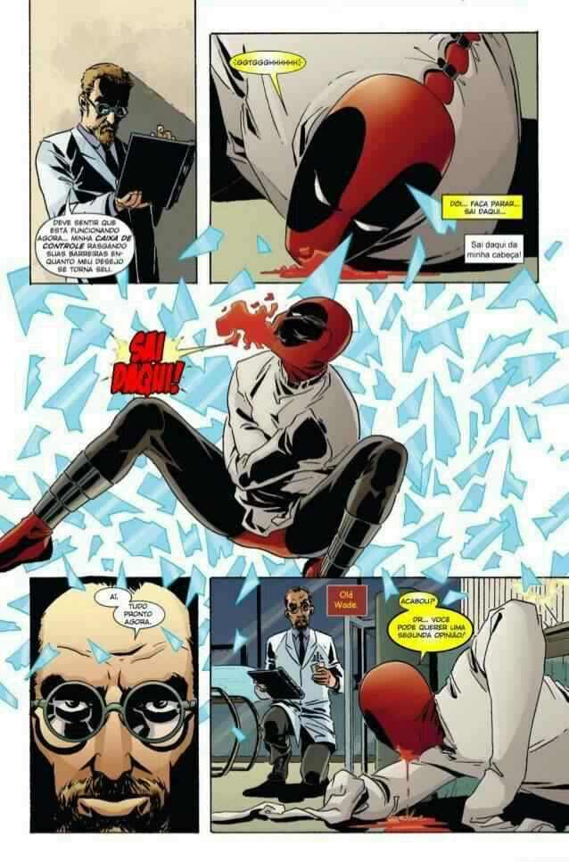

DeadPool massacra o universo marvel
A HQ começa com o vigia explicando coisas sobre o multiverso, ele diz que existem vários mundos, e que cada um deles com coisas diferentes.
O vigia nos apresenta um universo diferente do tradicional, com o quarteto fantástico sendo atacado pelo Deadpool, que conseguiu matar o coisa é o senhor fantástico, depois disso, Deadpool também mata Johnny storm, cortando seu pescoço e mata a Susan storm com uma espada.
O vigia diz que esse não é o começo, e nos mostra como essas coisas aconteceram.
Os X-Men estavam levando Deadpool para o hospital psiquiátrico ravencroft, achando que lá alguém conseguiria "curar" o Deadpool da insanidade dele.
Mas o psiquiatra de Wade era um vilão, o homem Psíquico. Ele explica para Deadpool que quer formar um exército de vilões e que Deadpool iria lidera-los, mas devido a instabilidade mental de Wade, isso não seria possível, então, o homem Psíquico tenta controlar a mente de Deadpool para que ele obedeça seus comandos.
Deadpool consegue resistir e acaba matando o homem Psíquico.
Mas a tentativa de controlar a mente de Wade acaba dando pra ele uma nova personalidade, ele ficou muito mais cruel, maligno e violento. Então, Deadpool decide que irá matar todos os heróis e vilões da marvel, como vingança.
Ele começa colocando fogo em todo o hospital psiquiátrico, matando todos lá dentro.

Depois de um tempo, é mostrado que o Deadpool matou milhares de heróis e vilões, como o doutor destino, o motoqueiro fantasma e Howard o pato. Wade acaba se encontrando com o homem aranha, que estava furioso devido as ações de Deadpool.
Os dois começam a lutar mas o aranha acaba levando um tiro na cabeça.
Depois, Wade rouba algumas partículas pym, que o fazem encolher, assim, ele entra na mansão dos vingadores com uma bomba e explode, assim matando o capitão América, o homem de ferro, o Thor, a capitã Marvel e a mulher aranha e Luke cage.
Devido a pele impenetrável de Luke cage, ele não morre na explosão, mas o Deadpool havia colocado micro bombas no café dele, que o explodem de dentro pra fora.
Depois, ele vai atrás do Hulk, mas é facilmente derrotado pelo verdão, então, ele espera o Hulk se transformar novamente em Bruce Banner, e quando isso acontece ele corta a cabeça dele.
Deadpool então vai atrás dos X-Men. Ele prende o professor Xavier, o professor tenta entrar na mente de Wade para mata-lo, mas a mente dele é tão complexa e tão doentia e tão tóxica, que o professor acaba tendo uma morte cerebral.
Ele cria armadilhas e mata todos os X-Men, até que o Wolverine aparece para enfrenta-lo.
Wolverine entra em uma sala e vê a x-23 é o Daken presos em uma sala, onde sempre que eles começavam a se regenerar, lanças chamas eram acionados e os queimavam.
Ele explica que o Wolverine sempre irá voltar de sua morte, mas não devido a seus fator de cura, e sim sua popularidade, ele também diz que está fazendo isso porque, nos, os espectadores queríamos ver isso acontecer, mas ele diz que vai dar um jeito de fazer a morte de Logan ser definitiva, e corta a cabeça dele.
Na cidade, vários heróis e vilões começam a brigar e alguns deles se suicidaram. Enquanto isso, o justiceiro estava procurando Deadpool com uma sniper, quando ele o encontra, dá um tiro em sua cabeça, mas quando vai verificar o corpo, ele ve que era o mestre dos bonecos. Deadpool aparece e diz para o justiceiro, que fez o mestre dos bonecos construir vários bonecos de voodoo de heróis e vilões, e usa um deles para matar o justiceiro.
Ele também usa os bonecos para matar Thanos, surfista prateado e nova.
Deadpool encontra o homem coisa, que é o portal para o multiverso, Wade o convence a abrir o portal, assim, ele sai no multiverso matando milhões de outros personagens.
link para mais informações no forum oficial